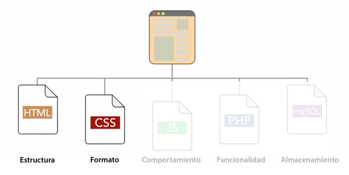
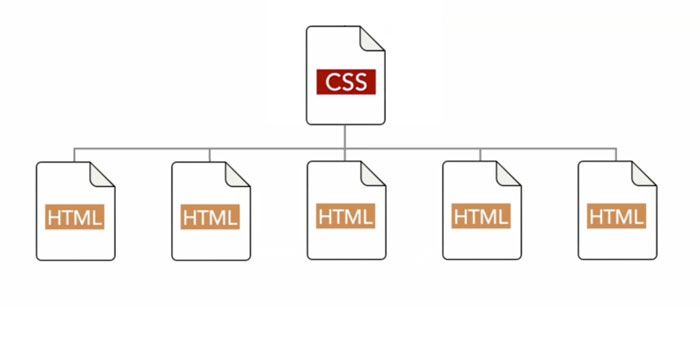
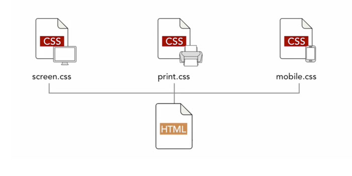
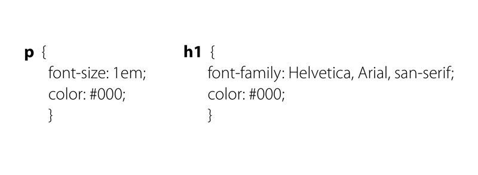
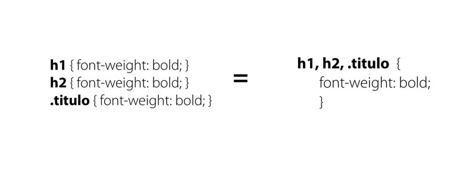

Una página web puede estar formada por 5 componentes principales:

Para crear una página web estática sólo necesitaremos HTML para la estructura y CSS para la presentación:
<head>.Los elementos HTML heredarán algunos estilos de sus elementos contenedores (parent elements).
Por ejemplo si declaramos un color al elemento
el resto de elementos de la página tendrán el mismo color a menos que específiquemos lo contrario.La "cascada" a la que hace referencia la C de CSS explica la manera en la que el lenguaje resuelve los conflictos entre selectores.
El cliente web lee los estilos desde la primera línea del documento de manera descendente. Por esta razón si un selector aplica una regla ya exisitente en ese selector esta sera sobreescrita (siempre y cuando la especificidad sea la misma).
El carácter modular del CSS permite modificar el aspecto de una página por completo sin afectar al contenido.
Mediante hojas de estilo específicas podemos optimizar contenidos para múltiples dispositivos.
Mediante el Selector indicamos al código el elemento al que queremos aplicar formato.
Una regla está formada por un selector y una declaración o bloque de declaraciones.
p {
color: red;
font-weight: bold;
}
Es el código entre { } es la secuencia de estilos que aplicaremos al Selector.
p {
color: red;
font-weight: bold;
}
Atributo del Selector que queremos modificar. Finaliza siempre en :
p {
color: red;
font-weight: bold;
Modificando el Valor de una propiedad aplicamos un estilo al selector.
Finaliza siempre en ;
p {
color: red;
font-weight: bold;
Al igual que con HTML, podemos insertar comentarios en nuestro código CSS. Para abrir un comentario escribiremos /* y para cerrarlo */
p {
color: blue;
}
/* Este es un comentario de una sola linea */
/*
pero tambien
puede tener
varias
lineas
*/
Los espacios en blanco y saltos de línea se utilizan para mejorar la legibilidad.
/* Esto: */
p {
color: red;
font-weight: bold;
}
/* Es lo mismo que esto: */
p { color: red; font-weight: bold; }
Es el más genérico.
Aplicamos estilo a todos los elementos de la página.
La combinación Elemento-específico aplica una clase o un ID exclusivamente al elemento que le precede.

Aplicamos los mismos estilos situándolos uno a continuación del otro separados por coma (,)
Existen tres maneras de relacionar un CSS a un HTML en concreto:
Podemos asignar estilos CSS directamente en un elemento HTML mediante el atributo style="".
Los estilos solo se aplicarán a ese elemento en concreto, por lo cual el selector no se utiliza en este caso.
<p style="color: red">Esto es un párrafo rojo.</p>Otra forma de utilizar CSS es mediante un tag <style> en el <head> del documento.
Los estilos se aplicaran a todos los elementos de la página de acuerdo a los selectores utilizados.
<head>
<style>
p {
color: red;
}
h1 {
color : blue;
}
</style>
</head>
La manera más eficiente de relacionar CSS y HTML es utilizando una hoja de estilo externa, lo que nos permite compartir un mismo CSS para todo nuestro sitio web.
Esta hoja es un archivo con extensión .css que se incluye en el <head> del HTML mediante un tag <link>.
<head>
<link rel="stylesheet" href="css/styles.css">
</head>